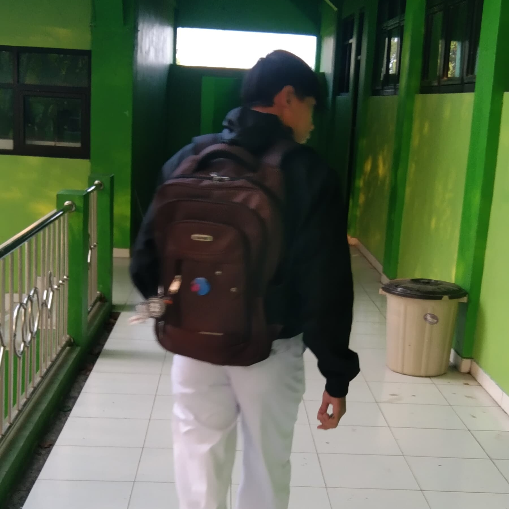

Tegar Tri Abadi
Pelajar SMK • Teknik Komputer dan Jaringan • SMK PGRI 6 Ngawi
Fokus pada pengembangan antarmuka web dan pemahaman dasar jaringan komputer. Mempelajari HTML, CSS, dan JavaScript melalui pembuatan proyek-proyek praktis yang fungsional dan responsif.
Keahlian Teknis
HTML90%
CSS40%
JavaScript25%